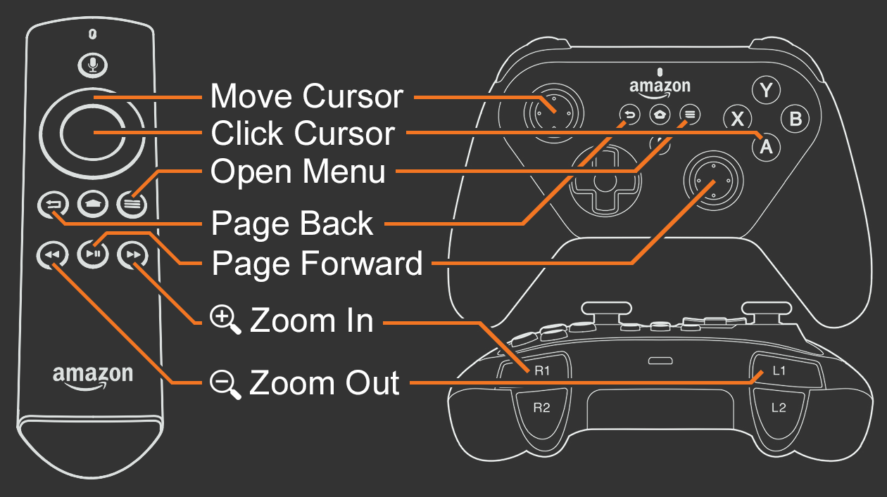
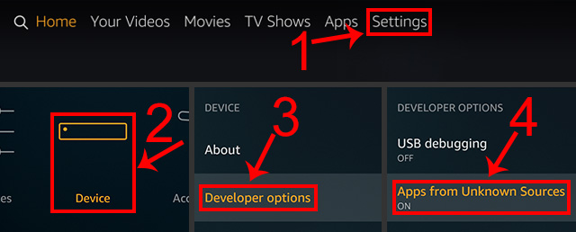
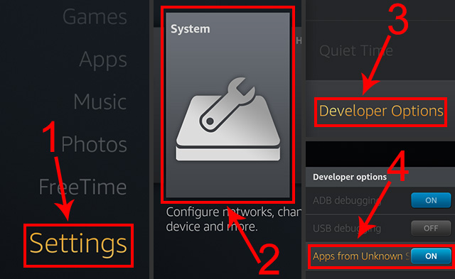

The built-in web browser allows you to view websites and download files from web pages.
Use the four directional (◎) buttons on your remote to move the on-screen cursor. Click links under the cursor by pressing the remote's center select (◉) button. Press the fast-forward (▸▸) button to zoom in and press the rewind (◂◂) button to zoom out. You can scroll the page by moving the cursor to the edges of the browser. Once you've scrolled to the end of a direction, pressing that direction button again will exit the cursor out of the browser window and into the navigation menu or top menu. Pressing the back (↩) button will move back a page by reloading the previously loaded page and pressing the play (▶) button will move forward a page. Pressing the menu (≡) button will open the browser menu. While the browser menu is open, pressing the menu (≡) button again will enter fullscreen mode. While in fullscreen mode, press the menu (≡) button to access the browser menu and press it again to exit fullscreen mode.
Use the left joystick (◎) to move the on-screen cursor. Click links under the cursor by pressing the Ⓐ button. Press the R1 shoulder button to zoom in and press the L1 shoulder button to zoom out. You can scroll the page by moving the cursor to the edges of the browser. Once you've scrolled to the end of a direction, moving the joystick in that direction again will exit the cursor out of the browser window and into the navigation menu or top menu. Pressing the back (↩) button will move back a page by reloading the previously loaded page and clicking in either joystick will move forward a page. Pressing the menu (≡) button will open the browser menu. While the browser menu is open, pressing the menu (≡) button again will enter fullscreen mode. While in fullscreen mode, press the menu (≡) button to access the browser menu and press it again to exit fullscreen mode.
The browser menu gives you quick access to your favorites and browser options. You can open the menu by selecting the menu icon in the upper-right corner of the "Browser" section, or by pressing the menu (≡) button on your remote. You can also add the URL that is currently loaded as a new favorite from within the browser menu.
You can enlarge the browser view to take up the entire screen by selecting the "Fullscreen Mode" option from the browser menu. To exit fullscreen mode, open the browser menu and select the "Exit Fullscreen Mode" option. Alternately, you can quickly enter and exit fullscreen mode by pressing the menu (≡) button twice.
To zoom in and enlarge the page being viewed, press the fast-forward (▸▸) button on the remote or the R1 shoulder button on the game controller. To zoom out and shrink the page being viewed, press the rewind (◂◂) button on the remote or the L1 shoulder button on the game controller.
JavaScript is disabled by default in the browser, but you can enable it from the "Settings" section or the browser menu if a page you load does not look right or is not working correctly. See more information about enabling JavaScript down below.
All files in the download folder will be listed in the "Files" section. The default download folder is /sdcard/Downloader, but this can be changed in the "Settings" section. To open a file on the list, highlight it and press the select (◉) button on your remote, which is the circular center button on the Fire TV remote. If the file is an APK file, opening it will trigger the app's installation. To delete a file on the list, highlight it and press the menu (≡) button on your remote. You will be asked to confirm deletion before the file is permanently deleted.
Favorites are like bookmarks that allow you to easily save and load URLs you visit often. You can load a favorite by selecting it in the "Favorites" section or from the browser menu. To access options for managing favorites, select the menu icon in the upper-right corner of the "Favorites" section or press the menu (≡) button on your remote while in the "Favorites" section.
To add a new favorite, select the "Add new favorite" option from the favorites menu in the "Favorite" section. You will be asked to enter an optional name for the favorite and a URL. If you don't enter a name, the URL will be used as the name. You can also add a favorite using the browser menu in the "Browser" section. When adding a favorite using the browser menu, the name and URL fields will automatically be filled to match the title and URL of the page that is currently loaded in the built-in browser. Up to 500 favorites may be saved. Duplicate favorites with identical name and URL pairs are not allowed.
To add several favorites at once, you can import them from a favorites file stored on your device. The favorites file must be a .txt file located in the download folder you've set in the "Settings" section. The default download folder is at /sdcard/Downloader. See the "Favorites Import Format" section below for details about the proper format of the contents of the favorites file. To import all favorites in a favorite file, select the "Import favorites from file" option in the favorites menu and then select the favorites file from the list shown.
To add several favorites at once, you can import them from a URL. The URL used can point to a .txt file stored online or a pastebin.com page. See the "Favorites Import Format" section below for details about the proper format of the contents of the favorites file or pastebin.com text. To import all favorites from a URL, select the "Import favorites from URL" option in the favorites menu and then enter the URL of the favorites file or pastebin.com page.
To properly import favorites, either from a file or from a URL, the list of favorites must have one favorite on each line. Each line must start with the URL to be imported as a favorite. If you want to include an optional name for the favorite, add a space after the URL and then the favorite's name. The favorite's name may contain additional spaces.
For example, this is a properly formated list of favorites:
https://www.google.com Google
https://amazon.com Amazon
https://domain.com Spaces in the name are fine
http://urls-without-names-are-also-fine.com
http://www.this-is-favorites-url.com This is the favorites name
To save your list of favorites to a .txt file, select the "Export favorites to file" option from the favorites menu. The location of the export file will be displayed and you will be asked to confirm its creation. The favorites export file will be saved in the download folder you've set in the "Settings" section. The default download folder is at /sdcard/Downloader. The favorites export file will be named downloader-favorites-YYYY-MM-DD.txt and its contents will be in the format described above in the "Favorites Import Format" section.
Highlighting a favorite in the "Favorites" section and pressing the select (◉) button will load the favorite. If the saved URL is to a website, the page will load in the built-in browser. If the saved URL is to a file, the file will begin downloading. You can also load favorites from within the browser menu.
To edit an existing favorite, highlight the favorite in the "Favorites" section, press the menu (≡) button on the remote, and select the "Edit favorite" option. You will then be able to modify the name and/or URL of the favorite.
To delete an existing favorite, highlight the favorite in the "Favorites" section, press the menu (≡) button on the remote, and select the "Delete favorite" option. You will then be asked to confirm deletion. You can also delete all favorites at once by selecting the "Delete ALL favorites" options from the favorites menu. You will be asked to confirm deletion of all favorites before they are deleted. Deleted favorites cannot be recovered.
To reorder the list of favorites, highlight the favorite you want to move from the list in the "Favorites" section, press the menu (≡) button on the remote, and select the "Move favorite" option. Then press up or down to move the favorite and press the select button to save the favorite's new location.
Enter the name of the folder in your device's /sdcard directory where you would like files to be downloaded. If a folder with the name you enter does not exist, one will be created. This is also the directory that is displayed in the "Files" section of this app.
The default value is: Downloader.
If this setting is checked, any APK downloaded by this app will automatically ask to be installed. You can uncheck this option if you prefer to download several files first and then install them all at once from the "Files" section of the app.
The default value is: Checked.
If this setting is checked, URLs entered on the "Home" screen, which do not point directly to a file, will automatically be opened in the built-in web browser. If this setting is unchecked, you will always be asked if you want to open the URL in the built-in web browser.
The default value is: Checked.
If this setting is checked, JavaScript code on websites loaded in the built-in web browser will be allowed to function. If unchecked, all JavaScript code will be blocked. Many websites require JavaScript to work correctly. If you load a website in the built-in web browser and it does not look right or does not work correctly, you can try enabling JavaScript and re-loading the website. Disabling JavaScript often results in websites loading faster, and often prevents website ads from loading altogether. It also prevents potentially malicious code from harming your device.
The default value is: Unchecked.
Before you can install or "sideload" 3rd-party apps on the Fire TV, you must first enable "Apps from Unknown Sources" from the Fire TV's settings menu.
Go to: Settings > Device > Developer options > Apps from Unknown Sources

Go to: Settings > System > Developer options > Apps from Unknown Sources
